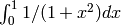
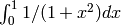

Monte Carlo integration¶
Level: Basic (language,basic libraries)
Compute  via Monte Carlo integration. To do this, think of a
function whose integral is related to (e.g. ), and then compute this integral via Monte Carlo
integration.
via Monte Carlo integration. To do this, think of a
function whose integral is related to (e.g. ), and then compute this integral via Monte Carlo
integration.
Try several different functions and compare.